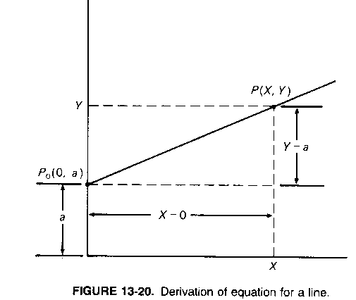
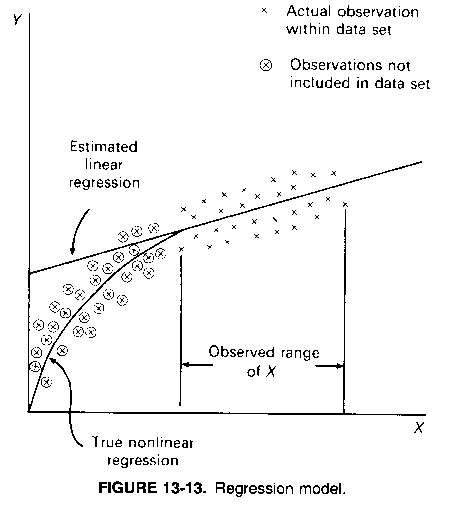
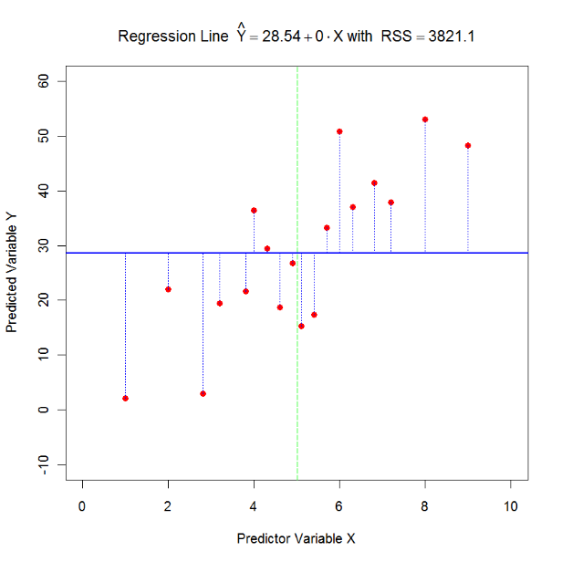
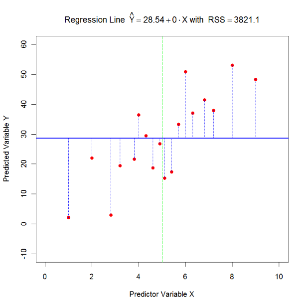
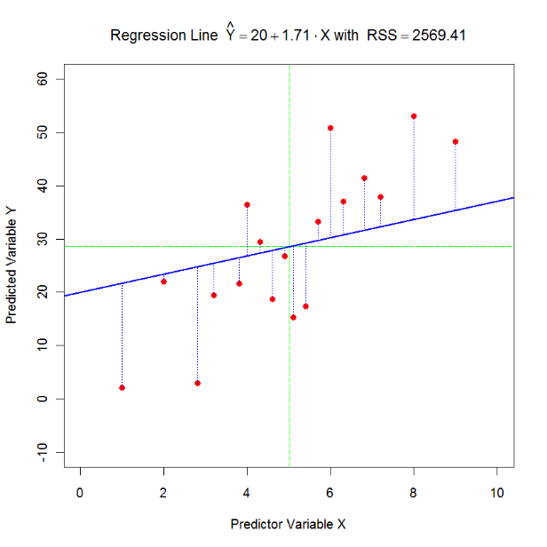

Chapter 04: Bivariate Regression Analysis
1 The Bivariate Regression Model
Bivariate Regression analysis assumes a clear distinction between a cause and its resulting effect variable:
One variable is given exogenously. This variable is called the independent variable or cause and denoted by \(X\). In theory, the independent variable can be controlled, and its measurements can be repeated.
The response, endogenous, effect or dependent variable \(Y\) is linked through a linear function to the independent variable:
\[y_i = \beta_0 + \beta_1 \cdot x_i + \varepsilon_i\]
(note deviation from BBR notation) where \(\varepsilon_i\) is the random disturbance term. It captures the random variation \(\varepsilon_i = \hat{y}_i - y_i\) of \(y_i\) around its predicted value \(\hat{y}_i = \beta_0 + \beta_1 \cdot x_i\).
- Regression traces the conditional distribution of \(Y\) given any feasible value of \(X = x_i\).
1.1 Data Example: Students’ Helicopter Experiments
Regression traces the conditional distribution of \(Y\) given any feasible value of \(X = x_i\).

2 Notational Considerations
2.1 Population Model
For the \(i^{th}\) observation the population model is:
\[y_i = \beta_0 + \beta_1 \cdot x_i + \varepsilon_i\]
- Neither the parameters \(\beta_0, \beta_1\) nor the error term \(\varepsilon_i\) are directly observable.
- The parameter \(\beta_0\) is called the intercept and the parameter \(\beta_1\) is the slope.
- The parameters \(\beta_0\) and \(\beta_1\) are constant for all observations. They denote a part of the model structure.
- The disturbance \(\varepsilon_i\) is directly associated with the \(i^{th}\) observation.
- The disturbances share an underlying random distribution, which is also part of the model structure.
2.2 Sample Estimates
For the sample estimates the predicted value of the model becomes:
\[\hat{y}_i = b_0 + b_1 \cdot x_i\]
with the estimated residual:
\[e_i = y_i - \hat{y}_i\]
2.2.1 Notation Notes
- Some books use \(\alpha\) instead of \(\beta_0\) for the population intercept and \(a\) instead of \(b_0\) for the estimated intercept (for instance, Burt and Barber).
- Some people also write \(\hat{\beta}_0\) and \(\hat{\beta}_1\) for the estimated parameters \(b_0\) and \(b_1\) as well as \(\hat{\varepsilon}_i\) for the residuals.
- Bivariate regression has two estimated parameters \(K = 2\): one for the intercept \(\beta_0\) and one for the slope \(\beta_1\).
3 Basic Interpretation
3.1 Intercept and Slope
 
The estimate \(b_1\) slope is interpreted as: If we change \(X\) by one unit, \(Y\) will change by \(b_1\) units.
If the estimated slope is virtually zero then the independent variable has no impact on the variability of the dependent variable.
3.2 Key Questions
- What happens to the intercept if the slope equals zero?
- What happens to two regression lines if they only differ in their intercepts?
- What happens to two regression lines if they only differ in their slopes?
- Can we make certain statements outside the observed support (value range) of the variable \(X\)?
 Note: We can interpolate within data samples but cant extrapolate outside the samples or learned data.
3.3 Important Concepts
The regression line linearly summarizes the data by a straight line (uses only two parameters for the \(n\) observed data pairs \((X_i, Y_i)\) of observations \(i\)).
Linearity needs to be approximately satisfied. Advanced topic: Some transformations allow achieving linearity.
Extrapolations must be made with caution.
Parsimony Principle: reduce the number of data points by replacing them with simple but general rules (summarize the data points).
Linear regression analysis separates:
- The systematic component which is the conditional expectations of \(y_i\) (conditional on the observation \(x_i\)): \(\hat{y}_i = \beta_0 + \beta_1 \cdot x_i\)
- The random component which are the disturbances \(\varepsilon_i\)
The residuals are unique to each observation. They deviate from the general rule \(\beta_0 + \beta_1 \cdot x_i\).
4 Key Assumptions of Regression Analysis
Linear Relationship: the relationship between the independent variable and the dependent variable is linear (or can be transformed to linearity)
Non-randomness of X: The independent variable \(X\) is in theory deterministic variables.
Note: should it for some reason be influenced by randomness, then we need to assume at least that this randomness is uncorrelated with the population disturbances \(\varepsilon_i\).
Disturbances: the disturbances \(\varepsilon_i\) have an identical distribution, with zero mean and constant variance, for every observation \(i\). They just deviate randomly with a given variance from their fixed mean of zero.
Independence: Disturbances are in general assumed to be independent (uncorrelated) among each other, i.e., \(Cor(\varepsilon_i, \varepsilon_j) = 0\).
Normality: The additional assumption of normality of the disturbances allows exact statistical significance testing in the estimated regression model. Significance tests will be discussed later in the semester.
4.1 Notes on Assumptions
The independence and identical distribution assumption of the disturbances is abbreviated by i.i.d. (independently identically distributed)
Only the disturbances are required to be normal i.i.d. Neither \(Y\) nor \(X\) need to follow necessarily a normal distribution.
However, a joint normal distribution of \(Y\) and \(X\) is highly desirable to approach a linear relationship and a balanced distribution of all data points in the scatterplot. This linear relationship may be achieved by transformations of either the dependent and/or the independent variables.
5 Ordinary Least Squares Estimation and Variance Decomposition
While it is possible to draw many different regression lines through the cloud of data points the method of ordinary least squares calculates a line that minimizes the sum of the squared regression residuals (RSS).
We want to minimize the sum of squared residuals RSS in ordinary least squares regression:
\[\min_{b_0, b_1} RSS = \min_{b_0, b_1} \sum (y_i - \hat{y}_i)^2\]
with the residual being written as:
\[e_i = y_i - \underbrace{(b_0 + b_1 \cdot x_i)}_{\hat{y}_i}\]
Minimizing this function is done by setting its first derivatives with regards to \(b_0\) and \(b_1\) equal to zero:
\[\frac{\partial RSS}{\partial b_0} = -\sum y_i + nb_0 + b_1 \sum x_{i1} \equiv 0\]
\[\frac{\partial RSS}{\partial b_1} = -\sum x_i \cdot y_i + b_0 \sum x_{i1} + b_1 \sum x_{i1}^2 \equiv 0\]
and solving for the unknown regression parameters \(b_0\) and \(b_1\).
5.1 Important Property: Regression Line Through Means
The first equation shows that the regression line must go through the means of the independent and the dependent variables \((\bar{Y}, \bar{X})\).
\[-\sum y_i + nb_0 + b_1 \sum x_{i1} \equiv 0\]
\[\Rightarrow \sum y_i = nb_0 + b_1 \sum x_{i1} \quad | \div n\]
\[\Rightarrow \bar{y} = b_0 + b_1 \cdot \bar{x}\]
5.2 Comparing Different Regression Lines
 

 
The line with the lowest RSS is the optimal regression line.
5.3 Questions for Consideration
Which optimality condition did the arithmetic mean satisfy?
Why do we focus on the sum of the squared differences \(\sum_{i=1}^{n} (y_i - \hat{y}_i)^2\) rather than the sum of the simple differences \(\sum_{i=1}^{n} (y_i - \hat{y}_i)\)?
What impact may outliers and extreme cases have on the estimated regression line?
What happens if the best fitting regression line is the horizontal line?
Do the estimated intercept and the estimated slope parameters covary?
5.4 Important Properties of OLS
- As long as we have an intercept \(b_0\) in the model, the sum of the residuals is always zero:
\[\sum_{i=1}^{n} (y_i - \hat{y}_i) = \sum_{i=1}^{n} e_i = 0\]
- One also can show that the estimated residuals are always uncorrelated with the independent variable as well as with the predicted value:
\[Corr(\hat{y}, e) = Corr(x, e) = 0\]
\(\Rightarrow\) Consequently, the independent variable in the regression model cannot be used to explain any additional variation in the regression residuals beyond its already explained variation. Consequently, its explanatory linear power is fully exhausted.
5.5 Important Notational Note
Burt, Barber and Rigby’s notation differs from the commonly used notation:
- BBR use RSS as “Regression Sum of Squares” and ESS means “Errors Sum of Squares”
- The lecture sticks to the standard notation where RSS stands for “Residual Sum of Squares” and ESS stands for “Explained Sum of Squares”
5.6 Decomposition: TSS = ESS + RSS
Since \(y = \hat{y} + e\)

FIGURE 13-11. Decomposition of the total variation.
FIGURE 13-12. Geometrical representation of (a) total variation, (b) residual variation, and (c) explained variation.
5.7 Definition of Variance Terms
Total Sum of Squares (TSS):
\[TSS = \sum_{i=1}^{n} (y_i - \bar{y})^2 \quad \text{with } df = n - 1\]
Residual Sum of Squares (RSS):
\[RSS = \sum_{i=1}^{n} (y_i - \hat{y}_i)^2 \quad \text{with } df = n - K\]
Explained Sum of Squares (ESS):
\[ESS = \sum_{i=1}^{n} (\hat{y}_i - \bar{y})^2 \quad \text{with } df = K - 1\]
- \(K = 2\) is the number of the estimated regression coefficients \(b_0\) and \(b_1\).
- The values TSS, RSS and ESS with their degrees of freedom can be found in the so-called regression ANOVA table of the standard regression output.
6 Coefficient of Determination: \(R^2\) and Adjusted \(R_{adj}^2\)
The goodness of fit measure is defined as:
\[R^2 \equiv \frac{ESS}{TSS} = 1 - \frac{RSS}{TSS}\]
It measures what percentage of the total variation in the dependent variable is explained by the regression model.
Note: a regression line based on just two observations will always fit the data perfectly. Therefore, the adjusted goodness of fit takes the degrees of freedom into account and penalizes for an overfitting model:
\[R_{adj}^2 \equiv 1 - \frac{RSS/(n-K)}{TSS/(n-1)}\]
When \(n\) is large relative to \(K\) then the difference between the adjusted and the ordinary \(R^2\) becomes negligible.
The more independent variables enter into the regression equation (moving from bivariate to multivariate regression), the better the fit of the model becomes.
7 Root Mean Square Error (Standard Error of Estimate)
The root-mean-square-error measures the standard deviation of the residuals:
\[s_e = \sqrt{Var(e)} = \sqrt{\frac{RSS}{n-K}} = \sqrt{\frac{\sum_{i=1}^{n} e_i^2}{n-K}} = \sqrt{\frac{\sum_{i=1}^{n} (y_i - \hat{y}_i)^2}{n-K}}\]
(Note: Burt and Barber use the notation \(s_{Y|X}\))
- We are losing \(K = 2\) degrees freedom because the regression line is constrained to go through the point \((\bar{x}, \bar{y})\). Alternative explanation: We need two points to define a line.
8 Helicopter Example Continued
> LinearModel.1 <- lm(flighttime ~ winglength, data=Helicopter)
> summary(LinearModel.1)
Call: lm(formula = flighttime ~ winglength, data = Helicopter)
Coefficients:
Estimate Std. Error t value Pr(>|t|)
(Intercept) 2.71151 0.18479 14.674 < 2e-16 ***
winglength 0.45691 0.05237 8.725 7.05e-14 ***
---
Signif. codes: 0 '***' 0.001 '**' 0.01 '*' 0.05 '.' 0.1 ' ' 1
Residual standard error: 0.4941 on 98 degrees of freedom
Multiple R-squared: 0.4372, Adjusted R-squared: 0.4314
F-statistic: 76.12 on 1 and 98 DF, p-value: 7.047e-148.1 Interpretation
The estimated intercept \(b_0\) is 2.7 which means that with zero wing length it will take the helicopter to hit the floor in 2.7 seconds.
The wing length slope parameter \(b_1\) implies that with each additional centimeter of wing length the flight duration will increase on average by 0.47 seconds.
The stars inform us how robustly different (more precisely statistically significant) the estimated regression parameters \(b_0\) and \(b_1\) are different from zero.
The standard error of the residuals, i.e., the remaining variation, is 0.4941.
The \(R^2\) tells us that in total 43.7% of the variation in flight time is explained by the independent variable wing length.
9 Summary
| Concept | Formula/Description |
|---|---|
| Population Model | \(y_i = \beta_0 + \beta_1 \cdot x_i + \varepsilon_i\) |
| Predicted Value | \(\hat{y}_i = b_0 + b_1 \cdot x_i\) |
| Residual | \(e_i = y_i - \hat{y}_i\) |
| OLS Objective | \(\min \sum (y_i - \hat{y}_i)^2\) |
| TSS | \(\sum (y_i - \bar{y})^2\) |
| RSS | \(\sum (y_i - \hat{y}_i)^2\) |
| ESS | \(\sum (\hat{y}_i - \bar{y})^2\) |
| \(R^2\) | \(ESS/TSS = 1 - RSS/TSS\) |
| RMSE | \(\sqrt{RSS/(n-K)}\) |
| Key Property | Regression line passes through \((\bar{x}, \bar{y})\) |
| Residual Sum | \(\sum e_i = 0\) |